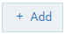

Invoke webMethods IS Policy Properties for Response Processing
If Comply to IS Spec parameter is configured as true, API Gateway invokes the IS Service with IS specification in the path pub.apigateway.invokeISService.specifications:ResponseSpec (for Response Processing)
The following are the input and output parameters for REST, SOAP, and WebSocket APIs as specified in the above IS Specification.
API type | Input parameters | Output parameters |
REST |  headers payload messageContext statusCode statusMessage apiName requestUrl correlationID (this is unique for request and response) | headers payload messageContext statusCode statusMessage |
SOAP | headers payload messageContext statusCode statusMessage apiName payloadObject requestUrl correlationID (this is unique for request and response) | headers payload messageContext statusCode statusMessage |
WebSocket | headers payload (this is applicable when the message type is Text) payloadObject (this is applicable when the message type is Binary) messageContext apiName requestUrl websocketInfo correlationID (this is unique for request and response) | headers payload messageContext payloadObject |
Note:
For SOAP to REST APIS, the payload contains the transformed JSON response.
Payload transformation does not happen automatically for content-type transformation. When you change the content type, ensure to do payload transformation also as part of IS Service.
When
Comply to IS spec is true, you can change the values of headers, query, payload, and so on, programatically using Message Context, as well as using the pipeline variables given.
Software AG recommends you do not change those values directly in Message Context, as the values in output pipeline variables are written to Message Context after the invocation of IS Service.
If Comply to IS Spec parameter is set to false, API Gateway invokes the IS Service with the same input and output parameters supported in 10.1 and the earlier versions::
proxy.name
JSONRESTContentString (REST only)
SOAPEnvelope (SOAP only)
EnvelopeString (SOAP only)
The table lists the properties that you can specify for this policy:
Property | Description |
Invoke webMethods Integration Server Service |
Add invoke webMethods Integration Server service | Specifies the webMethods IS service to be invoked to process the response messages and the authentication mode for the IS service. Provide the following information: webMethods IS Service. Specify the webMethods IS service to be invoked to pre-process the response messages. The webMethods IS service must be running on the same Integration Server as API Gateway Note:
If an exception occurs when invoking the webMethods IS service, by default API Gateway displays the status code as 500 and error message as Internal Server Error. You can set custom status code and error message by setting the following properties in the message context of the webMethods IS service: service.exception.status.code service.exception.status.message The sample code is given below:
IDataCursor idc = pipeline.getCursor();
MessageContext context = (MessageContext)IDataUtil.get(idc,"MessageContext");
if(context != null)
{
context.setProperty("service.exception.status.code", 404);
context.setProperty("service.exception.status.message", "Object Not Found");
throw new ServiceException();
}
Note:
If ServiceException or FlowException occurs when invoking webMethods IS Service, the message given in the exception is displayed to the client. If any other exception occurs, a generic error message is displayed to the client. Run as User. Specifies the authentication mode to invoke the IS service. If this field is left blank the incoming credentials of the user, identified by API Gateway, are used to authenticate and invoke the IS service. You can also specify a particular user, you want API Gateway to invoke the IS service. Note:
It is the responsibility of the user who activates the API to review the value configured in Run as User field to avoid misuse of this configuration. Comply to IS Spec. Mark this as true if you want the input and the output parameters to comply to the IS Spec present in pub.apigateway.invokeISService.specifications folder in wmAPIGateway package. Note:Software AG recommends users to configure the policy with Comply to IS Spec as true, as you can read or change the values of headers, and so on, without having to read from or write to the message context. |
webMethods IS Service alias | Specifies the webMethods IS service alias used to invoke the webMethods IS service to pre-process the response messages. Start typing the webMethods alias name, select the alias from the type-ahead search results displayed and click  to add one or more aliases. You can use the delete icon  to delete the added aliases from the list. |
Adding Custom Fields to Transactional Events
This section explains about how to add custom fields to the transactional events.
1. Create webMethods IS service by specifying the pub.apigateway.utils:customFieldInTransactionEventSpec as a specification reference.
2. In the webMethods IS service, set the required custom fields in the customFieldsMap output variable.
3. Once when customFieldsMap gets created, the custom fields will be available in the transactional events.
4. Invoke the API with the Invoke webMethods IS policy.
Note:
You can also add the custom fields to the transactional events from
API Gateway by configuring the
customTransactionFields.FIELD_NAME custom variable in the
Custom Extension policy. For more details, see
How Do I Define a Custom Variable?.